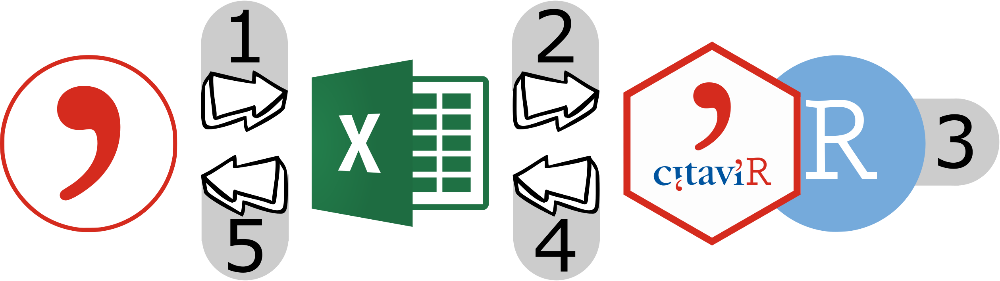

This is an unofficial helper package for dealing with Citavi. I am not affiliated with Citavi, just a fan.
The reference management software Citavi (Official Website, Official GitHub) allows for exports to Excel. With a bit of effort (i.e. via customized Citavi macros) it also allows for imports from Excel. CitaviR provides functionality for dealing with the data while it is outside Citavi to get the most out of it. Using CitaviR goes hand in hand with using the custom Citavi macros in the CitaviRMacros repository.
Installation
You can install the development version of CitaviR from GitHub:
devtools::install_github('SchmidtPaul/CitaviR')Workflow
The entire work flow from start to finish is structured in five steps.

| Step | CitaviR | Effort: 1st time setup | Effort: regular use |
|---|---|---|---|
| Step 1: Citavi to xlsx | 🙂 | 😎 | |
| Step 2: xlsx to R | ✅ | 😎 | 😎 |
| Step 3: Process data in R | ✅ | 🙂 | 😎 |
| Step 4: R to xlsx | ✅ | 😎 | 😎 |
| Step 5: xlsx to Citavi | 💥 | 🙂 |
Effort levels: low effort 😎; acceptable effort 🙂; can be cumbersome 💥